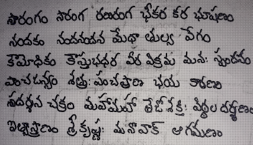
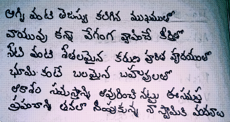

Hi,everyone I am Srisaiteja Thullimilli
I am from Guntur District Shifted to
Hyderabad. I am very much happy to show
you my personal portfolio website.
My father`s name is Ramesh,My Mother`s
name is Venkateswari. I pursued My
tenth in Unique High School, Chintal.
I pursued my intermediate in Srichaitanya
Junior college, currently I am pursuing
BTech from CSE department in
Vardhaman College of Engineering
Hobbies
Lifeorama
My most favorite youtube channel, whenever I get depressed this is the only thing which gives me relief from my pain this channel is spiritual as well as inspirational also it gives us very good knowledge of our culture, our ethics and even about the current situations and addictions which are damaging the youth
I love poems
I have another hobby of writing poems which i started recently, it is giving me new confidence of creativity in me that is poem writing I felt the urge to write poems in me recently, the main theme in my poems is to recollect the power and wisdom importance of almighty god. I wrote very less poems I am displaying the best among them
Move the slider to view my poems


Educational details
I cleared my 10thstandard with 9.8 GPA and my intermediate with 960 marks I have mentioned all those
things in a simple tabular form
Standard
Institution
Grade
Passed year
10thclass
Unique High School
9.8
2019
Intermediate
Sri Chaitanya Junior College
960
2021
Skills
Coding
I became very attracted to coding nowadays, it is as if we are speaking to computers
Time-manager
I was taught how powerful time is, and I personally feel that there is no practical way to time travel
I never waste time
Speaking
I like meeting new people and talking to them. I am a good public speaker
MY COLLEGE
college is the most memorable thing of my life, this poem below best describes myself in the begining
of my college days
Don't overthink, don't tense your nerve'...
Not only our tangent is different but I'm also standing alone upon a messed up curve..!
I'm an unsocial guy and it's very well known...
Don't try to find me out, I'm lost in the illusion of my own..!
It's not so easy for me to walk on the given way...
It's not so easy for me to give instant reply on — what you say..!
It's not so easy for me to follow your set norm'...
Whenever I try to do so... I'm stopped by my inner storm..!
I'm the one who tries to live under the table...
In the company of yours, I find myself uncomfortable..!
I run away, whenever I hear your call...
It's very tough for me to be friend with you all..!
It will take some time for my shyness to end...
It will take me some time to make new friend'..!
So give me my time to stand with you all, on the same line...
Until that moment, let me live in the space and thought of mine..!
my college gave me a chance to change myself and frame myself in a better way so that I don`t become
a lonely boy and I thank my class and my teachers for this